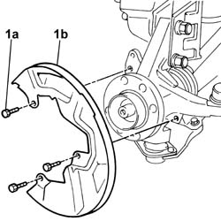
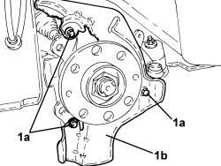

3310A59 front brake disc guard - r r
- Path
- Procedures > 33 BRAKES > 3310 DISC BRAKES > 3310A FRONT DISC BRAKES > 3310A59 front brake disc guard - r r
- Kind
- repair procedure (removal / refitting; the operation number is the code)
- Applies to
- all engines; all production periods
- Interactive page
- https://sloeber94.github.io/elrnDB-fDbl/en/#/2584628
Applies to: engines: 1.2 8v, 1.6 16v, 1.3 JTD 16V, 1.9 JTD 8V, 1.9 DIESEL; all production periods
 Removing
Removing
 Refitting
Refitting1. Undo the bolts (1a) and remove the brake disc guard (1b).

Applies to: engines: 1.2 8v, 1.6 16v, 1.3 JTD 16V, 1.9 JTD 8V, 1.9 DIESEL; all production periods
Refitting
RemovingFith the brake disc guard to the knuckle and tighten the bolts to torque.
Fastening | Component | dia | Value (daNm) | |
|---|---|---|---|---|
- | Bolt | FRONT BRAKE DISC GUARD | M6 | 0.5 |
Applies to: engines: 1.4 8v, 1.6 16v, 1.3 JTD 16V, 1.9 JTD 8V; production: da 12/03; only with equipment: MY 2005
Removing
Refitting- Position the vehicle on a lift.
Op. 4450B12 FRONT WHEELS (TWO) - R.R.
Op. 3310A60 FRONT BRAKE PADS - REPLACE
Op. 3310A57 FRONT BRAKE CALIPER BRACKET (ONE) - R.R.
Op. 3310A48 FRONT BRAKE DISC (ONE) , LEFT OR RIGHT - R.R.
1. Undo the bolts (1a) and remove the rear brake disc guard (1b).

Applies to: engines: 1.4 8v, 1.6 16v, 1.3 JTD 16V, 1.9 JTD 8V; production: da 12/03; only with equipment: MY 2005
Refitting
Removing- Place the front brake disc shield back in its housing and secure it using the bolts.
Op. 3310A48 FRONT BRAKE DISC (ONE) , LEFT OR RIGHT - R.R.
Op. 3310A57 FRONT BRAKE CALIPER BRACKET (ONE) - R.R.
Op. 3310A60 FRONT BRAKE PADS - REPLACE
Op. 4450B12 FRONT WHEELS (TWO) - R.R.
- Remove the vehicle from the lift.